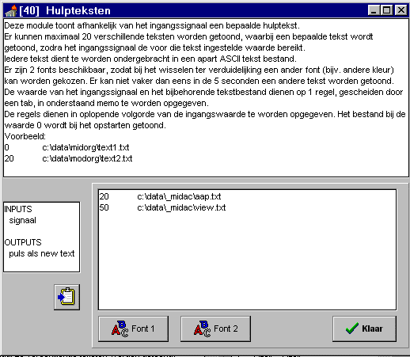
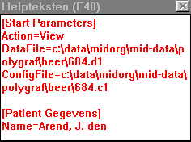

RF 2, Onset Systolische Bloeddruk
|
Deze module toont afhankelijk van het ingangssignaal een bepaalde hulptekst.
Er kunnen maximaal 20 verschillende teksten worden getoond, waarbij een bepaalde tekst wordt getoond zodra het ingangssignaal de voor die tekst ingestelde waarde bereikt.
Iedere tekst dient te worden ondergebracht in een apart ASCII tekst bestand.
Er zijn 2 fonts beschikbaar, zodat bij het wisselen ter verduidelijking een ander font (bijv. andere kleur) kan worden gekozen. De fonts worden afwisselend gebruikt, onafhankelijk van de volgorde van de teksten.
Er kan niet vaker dan eens in de 5 seconden een andere tekst worden getoond.
Het uitgangssignaal dat normaal 0 is, wordt gedurende 1 sample 1 gemaakt, op het moment dat een nieuwe tekst wordt getoond.

Let bij het invoeren van de gegevens op de volgende punten:
- waarde en bestandsnaam scheiden door TAB
- altijd bestandsnaam inclusief volledig path opgeven
- waarden in oplopende volgorde opgeven
Voorbeeld, bij bovenstaande instelling 

|
1 = Signaal |
ingangssignaal dat gebruikt wordt als trigger voor de diverse teksten. |
|
1 = New Text |
normaal=0, zodra tekst wordt vernieuwd gedurende 1 sample 1 |
1 = fontname1
2 = fontsize1
3 = fontcolor1
4 = fontstyle1
5 = fontname2
6 = fontsize2
7 = fontcolor2
8 = fontstyle2
9... = triggerwaarde en bijbehorend tekstbestand
© Instrumentele Dienst. Bijgewerkt op 8-12-1999.